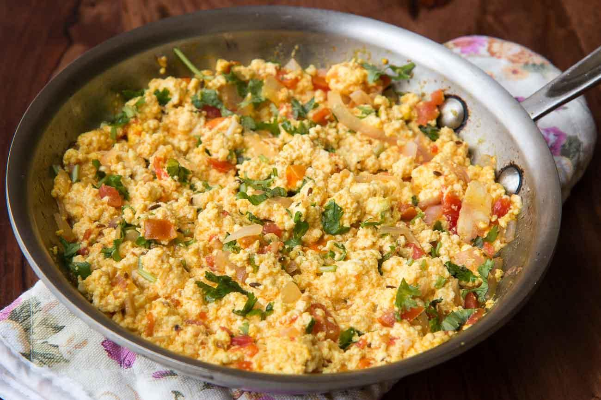

Ingredients
- Paneer (200g crumbled), 1 onion, 2 tomatoes, 1 green chili, 1 tsp ginger-garlic paste, turmeric, chili powder, garam masala, salt, butter/oil.
Steps
- Heat oil/butter → sauté onion + chili.
- Add ginger-garlic paste → cook briefly.
- Add tomatoes → cook till soft.
- Add spices (turmeric, chili, salt).
- Add crumbled paneer → mix and cook 3–4 mins.
- Finish with garam masala + coriander.
Home Page